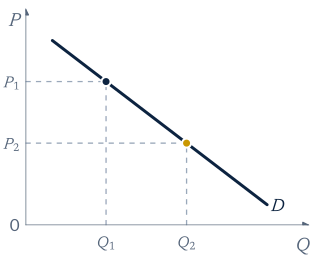
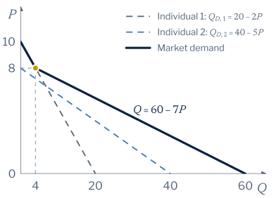
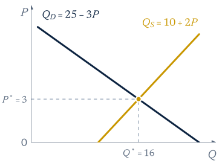
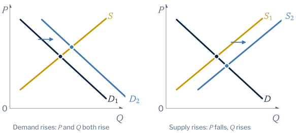
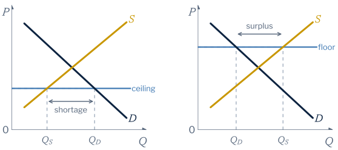

Lesson 3
FIN 30210 Managerial Economics
Jason R. Reed, PhD, University of Notre Dame
The law of demand The quantity demanded of a good or service is inversely related to its selling price, ceteris paribus.
\[ Q_d = f(P), \quad \frac{dQ_d}{dP} < 0 \]
The inverse relationship between price and quantity is generally due to
We graph demand with \(P\) on the vertical axis and \(Q\) on the horizontal axis.

Utility
A measure of general happiness from consuming a good or service. It isn’t a measure of usefulness but of preference, and preferences are idiosyncratic.
Diminishing marginal utility
As consumption of a good or service increases, the marginal utility from each additional unit decreases. To make up for the drop in marginal utility, a consumer needs lower prices to keep consuming.
Income effect As a product’s price falls (rises), a consumer’s purchasing power rises (falls), so they can generally buy more.
Normal goods: as purchasing power rises, quantity demanded rises. Inferior goods: as purchasing power rises, quantity demanded falls.
Substitution effect Reflects changes in consumers’ opportunity costs. As a product’s price falls, consumers substitute it for similar goods that are now relatively more expensive.
In most cases the two effects reinforce each other: a lower price generally brings a positive income effect and a positive substitution effect.
For a particular good or service, the market demand curve is built by summing individual consumers’ quantities demanded at each market price.
\[ \begin{aligned} Q_{d,1} &= a_1 + b_1 P \\ Q_{d,2} &= a_2 + b_2 P \\ Q_{d,3} &= a_3 + b_3 P \end{aligned} \]
\[ Q_{d,1} + Q_{d,2} + Q_{d,3} = (a_1 + a_2 + a_3) + (b_1 + b_2 + b_3)P \]
\[ Q_{D,M} = \sum_{i=1}^{n} Q_{d,i} = \sum_{i=1}^{n} a_i + \sum_{i=1}^{n} b_i P \]
Example 3.1 The total market demand for a product comes from three individuals with identical demand equations. What is the market demand equation?
\[ Q_{d,1} = Q_{d,2} = Q_{d,3} = 50 - 25P \]
Solution
\(Q_D = 3(50 - 25P) = 150 - 75P\)
Example 3.2 The total market demand for a product comes from two individuals with the following demand equations. What is the market demand equation?
\[ Q_{d,1} = 20 - 2P \qquad Q_{d,2} = 40 - 5P \]
Choke prices
Solving each for price: \(P = 10 - 0.5Q_{d,1}\) and \(P = 8 - 0.2Q_{d,2}\). Individual 2 buys nothing above $8.
Market demand
For \(P > \$8\), only individual 1 buys: \(Q = 20 - 2P\). For \(P \le \$8\), both buy: \(Q = (20 - 2P) + (40 - 5P) = 60 - 7P\).

Above $8 the market curve is individual 1’s demand. At $8 individual 2 enters, and the curve bends to \(Q = 60 - 7P\).
Income Normal and inferior goods. Which is which is subjective.
Tastes or preferences For example, recent trends in health.
Prices of related goods Substitutes and complements.
Price expectations If we believe prices will be lower in the future, demand will be lower today.
Consumers in the market More buyers means more demand at every price.
The function for market demand resembles
\[ Q_D = f(P, I, T, P_s, P_c, P^e, N) \]
From the demand function, the partial derivative with respect to each determinant is the marginal change in quantity demanded. Essentially, we’re observing the coefficients on the determinants in the demand curve.
\[\frac{\partial Q_D}{\partial P} < 0\]
\[\frac{\partial Q_D}{\partial I} > 0\]
\[\frac{\partial Q_D}{\partial T} > 0\]
\[\frac{\partial Q_D}{\partial P_s} > 0\]
\[\frac{\partial Q_D}{\partial P_c} < 0\]
\[\frac{\partial Q_D}{\partial P^e} > 0\]
\[\frac{\partial Q_D}{\partial N} > 0\]
\(\partial Q_D / \partial I > 0\) holds for normal goods; for inferior goods it’s negative.
The most common form for estimating market demand is a linear equation:
\[ Q_D = b_0 + b_1 P + b_2 I + b_3 P_s + b_4 P_c + b_5 P^e + b_6 N \]
\[ Q_D = \xi + b_1 P, \quad \text{where } \xi = b_0 + b_2 I + b_3 P_s + b_4 P_c + b_5 P^e + b_6 N \]
Using ordinary least squares (OLS) regression, we can estimate a demand function.
Problem 3.3 Monthly demand for a popular brand of fruit drink is \(Q_x = 10 - 5P_x + 0.001I + 10P_y\), where \(Q_x\) is gallons consumed per family per month, \(P_x = \$2.00\) is the drink’s price per gallon, \(I = \$20{,}000\) is median annual family income, and \(P_y = \$2.50\) is the price per gallon of a competing brand.
Parameters
A $1 increase in the drink’s price cuts monthly consumption by 5 gallons. A $1,000 increase in income adds 1 gallon. A $1 increase in the competitor’s price adds 10 gallons, so the two brands are substitutes.
Consumption
\(Q_x = 10 - 5(2.00) + 0.001(20{,}000) + 10(2.50) = 45\) gallons
Reduced form
\(Q_x = 55 - 5P_x\)
Higher income
\(Q_x = 10 - 5(2.00) + 0.001(30{,}000) + 10(2.50) = 55\) gallons
The law of supply The quantity supplied of a good or service is directly related to its selling price, ceteris paribus.
\[ Q_s = g(P), \quad \frac{dQ_s}{dP} > 0 \]
The result is a monotonically increasing relationship. Intuitively, as price rises, profits rise too, so firms supply more goods and services.
Profit is defined as
\[ \pi(Q) = TR(Q) - TC(Q) \]
We can also write total cost as fixed plus variable cost:
\[ TC = TFC + TVC = TFC + w \cdot L + r \cdot K \]
where total fixed cost is a constant, and total variable cost is a linear combination of the input prices: \(w\) is the wage rate for labor and \(r\) is the rental price of capital.
Input prices (\(w\), \(r\))
As input prices rise, total costs rise and firms produce less: supply shifts left.
Technology (\(e\))
Better methods of management or production raise productive efficiency. Supply increases because firms can produce more with the same inputs.
Taxes and subsidies (\(R\))
Higher taxes raise total costs and reduce profits. Higher subsidies lower total costs and raise profits.
Related goods (\(P_s\), \(P_c\))
Substitutes in production can be made with the same fixed facilities, such as corn or wheat. Complements in production are made together, such as beef and leather.
Price expectations (\(P^e\))
If firms expect higher prices in the future, they’ll hold back output today to sell tomorrow.
Number of firms (\(F\))
As firms enter the industry, total supply increases and the market supply curve shifts right.
Market supply collects these determinants:
\[ Q_S = f(P, w, r, e, R, P_s, P_c, P^e, F) \]
Problem 3.4 Market demand and supply for a product are \(Q_D = 25 - 3P\) and \(Q_S = 10 + 2P\). What are the equilibrium price and quantity?
\(25 - 3P = 10 + 2P\)
\(P^* = 3\)
\(Q^* = 25 - 3(3) = 10 + 2(3) = 16\)


Demand rises while supply falls. What happens to price? To quantity?

Price ceiling, shortage A legal maximum price. Quantity supplied falls short of quantity demanded, so goods get rationed by queuing, waiting lists (rent control), bribes, or favored customers.
Price floor, surplus A legal minimum price, such as the minimum wage. Quantity demanded falls short of quantity supplied.
Up next: Lesson 4
FIN 30210 Managerial Economics